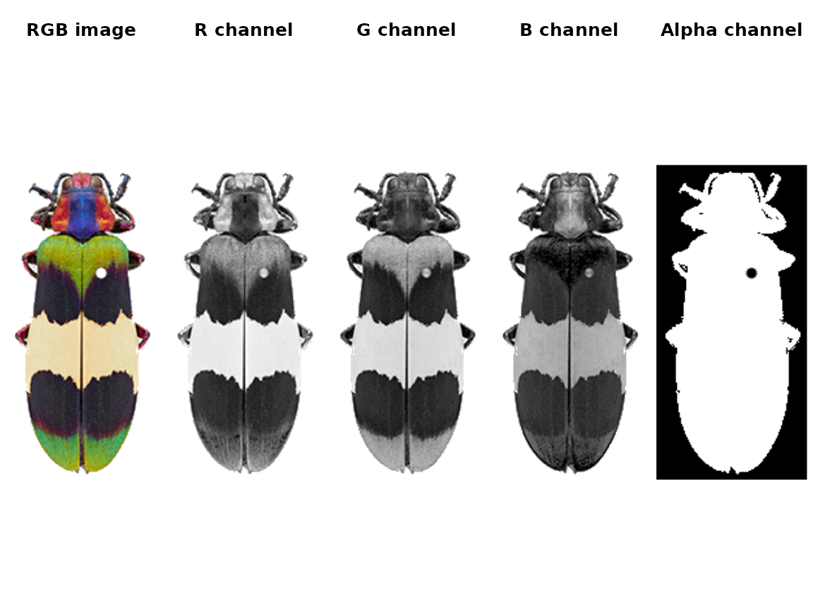
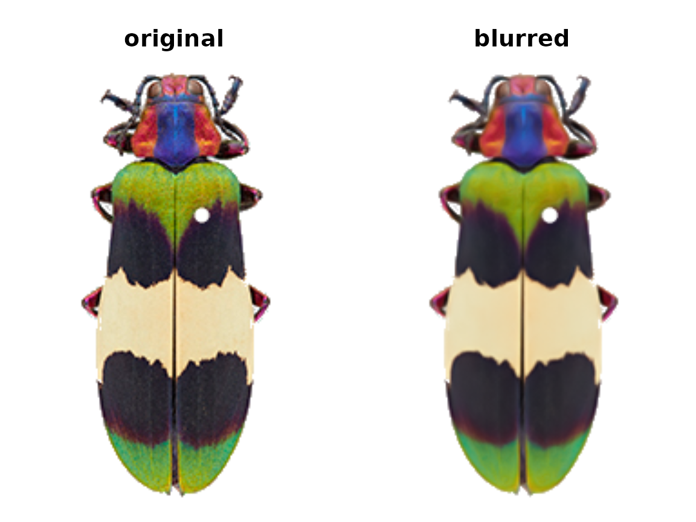

Step 1: Loading & processing images
step01_loading.RmdHow to get images into R.
-
Introduction
- Step 0: Image acquisition and preparation
- Step 1: Loading & processing images
-
Step 2: Initial clustering
-
Step 3: Refinement
-
Step 4: Tweaks & edits
- Step 5: Visualizing & exporting output
You can also tour the functions in the function gallery.
Most of the actual recolorize functions can take a path to an image directly as input, so these steps are entirely optional. I include it here to show the option of loading the image into R first to do some basic manipulations, and because it can be useful to understand how images are structured as arrays in R.
Reading an image into R
We can read in an image by passing the filepath to the readImage function. This is a pretty generic function (almost every image processing package in R has something similar); the recolorize version doesn’t even assign the output to a special class (so don’t try to print it).
library(recolorize)
# define image path - we're using an image that comes with the package
img_path <- system.file("extdata/corbetti.png", package = "recolorize")
# load image
img <- readImage(img_path, resize = NULL, rotate = NULL)
# it's just an array with 4 channels:
dim(img)
#> [1] 243 116 4An image is a numeric array with either 3 or 4 channels (R, G, B, and optionally alpha for transparency). JPG images will only have 3 channels; PNG images will have 4. This is quite a small image (243x116 pixels) with 4 channels.
We can plot the whole array as an image, or plot one channel at a time. Notice that the red patches are bright in the R channel, same for blue-B channel, green-G channel, etc—and that the off-white patch is bright for all channels, while the black patches are dark in all channels. The alpha channel is essentially just a mask that tells us which parts of the image to ignore when processing it further.
layout(matrix(1:5, nrow = 1))
par(mar = c(0, 0, 2, 0))
plotImageArray(img, main = "RGB image")
plotImageArray(img[ , , 1], main = "R channel")
plotImageArray(img[ , , 2], main = "G channel")
plotImageArray(img[ , , 3], main = "B channel")
plotImageArray(img[ , , 4], main = "Alpha channel")
Optionally, when you load the image, you can resize it (highly recommended for large images) and rotate it. Image processing is computationally intensive, and R is not especially good at it, so downsampling it usually a good idea. A good rule of thumb for downsampling is that you want the smallest details you care about in the image (say, spots on a ladybug) to be about 5 pixels in diameter (so if your spots have a 20 pixel diameter, you can set resize = 0.25).
The only other thing you might do to your images before sending them to the main recolorize functions is blurImage. This is really useful for minimizing color variation due to texture (e.g. scales on a lizard, feathers on a bird, sensory hairs on an insect), and you can apply one of several smoothing algorithms from the imager package, including edge-preserving blurs:
blurred_img <- blurImage(img, blur_function = "blur_anisotropic",
amplitude = 10, sharpness = 0.2)
This step is optional: most of the recolorize functions will accept a path to an image as well as an image array.